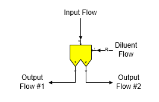
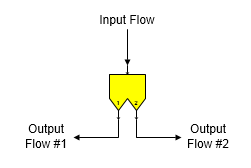

The separator/filter station is used to split a material flow stream into two output flow streams with different flow stream components. Two separator/filter stations are provided with Sugars: (1) with a diluent or wash flow, and (2) without a diluent or wash flow.
Separator/Filter Station with Diluent Flow Separation of the input flow into two output flows with different components is done using a diluent or wash flow to assist the separation.

Separator/Filter Station without Diluent Flow Separation of the input flow into two output flows with different components is done without the use of a diluent or wash flow.

General Features Separator/filter stations are used to split a process flow stream that goes into port 0 into two output flow streams that have different weight flow rates and compositions. If a diluent or wash flow is used, it goes into port 1 and it can be either a required flow (that is, Sugars will calculate the quantity of the diluent flow based on the input parameters used in the station) or a not required flow depending on the settings for the separator. Whereas, a distributor station is used to split a flow stream into any number of different flow streams all having the same composition, a separator station allows selective separation of the flow components. A diluent flow is allowed for making the separation, but it isn't necessary.
The output flows from a separator without a diluent flow will have the same temperature as the input flow unless the output flows have condensable vapors. If a diluent flow is used, then the energy of the output flows will include the diluent portion that flows to each of the outputs and their temperatures will reflect the diluent that is in each flow. Flows that have condensable vapors will have their temperatures set to the saturation temperature corresponding to the pressure of the flow and the flow components (i.e., water vapor or ethanol-water vapor mixture). An energy balance is done by Sugars with these temperatures and if the energy content of the flow(s) into the separator is larger than the energy content of the flows out, then the excess energy is applied to the output flow with the lowest temperature. However, the excess energy will be apportioned to each output flow in a ratio to their energy flow rate if the output flows have the same temperature. There may be phase changes that occur in the output flows after the excess energy is applied to them and the temperatures may then be different. Conversely, if the energy balance of the input and output flows with their initial temperatures results in insufficient energy from the input flows to satisfy the output flows energy content, then this energy deficiency is assumed to come from an external source that is necessary to make the separation.
Separator stations are used to model filters, clarifiers, thickeners, presses, ion exchange, chromatographic separation, etc. See the Separator/Filter Examples section for techniques on using separators to model different processes and equipment.